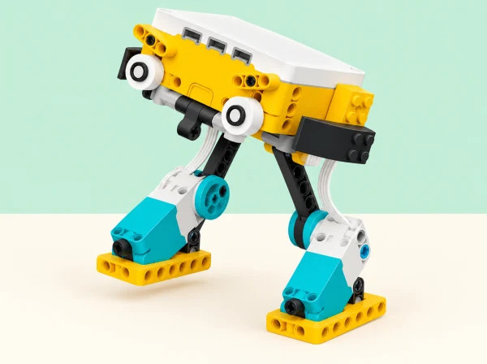

La desfilada de les caminades impossibles
🏷️ Moviment i disseny
🌱 Situació, repte i intenció
El full oficial deixa oberta la construcció i pregunta com la llargària de les potes afecta el moviment i com impulsar el robot sense rodes. Ací convertim eixes preguntes en una investigació: predir, fer un muntatge inicial, canviar una variable cada vegada, repetir i comunicar els límits. No busquem una «caminada correcta»: un prototip que vibra, gira o no avança també aporta evidència si l’equip la registra i la usa per decidir el pas següent.
🎯 Aprenentatges i vocabulari
- Identificar quines peces giren, quines articulen les potes i quins punts contacten amb la pista.
- Relacionar la llargària i l’ancoratge de les potes amb la distància, la direcció i l’estabilitat.
- Programar rotacions i pauses, i comparar moviments de dos motors coordinats o alternats.
- Planificar una prova justa, repetir-la almenys tres vegades i explicar variacions en els resultats.
- Descriure una millora amb dades i aclarir en quines condicions és vàlida la conclusió.
Els criteris comuns són: cap roda; el model es manté sobre la pista durant la prova; el recorregut pot mesurar-se; l’equip pot aturar-lo abans d’ajustar-lo; i els resultats es presenten sense exagerar què demostra una única superfície o tres intents.
🧰 Materials i preparació
SPIKE Prime 45678 amb hub, un o dos motors, bigues i connectors; cinta per marcar el carril; regle o cinta mètrica; cronòmetre; full de dades; bases de cartó i retalls plans de diferents textures. Un sensor del set és opcional. Prepareu una superfície plana i una barrera ampla d’escuma només per a la prova de sensor; manteniu lliure la vora de les taules i recolliu peces soltes.
En blocs, programeu una seqüència de gir amb velocitat i nombre de rotacions explícits, i una pausa entre accions quan corresponga. No interpreteu «temps» i «rotacions» com a proves equivalents si les condicions d’inici difereixen. Python és una extensió per a qui ja coneix l’entorn; el codi d’exemple oficial correspon a SPIKE Legacy, per això cal comprovar la versió disponible.
Si no hi ha dispositiu, l’equip pot simular el cicle motor-pota amb una roda de paper i fitxes de moviment, però la conclusió es marca com a model de paper i no com a resultat del robot físic.
📅 Seqüència didàctica
Descomponem la caminada
Fase 1 · Activem i prediem
Observeu el model de referència i una demostració lenta. Marqueu amb fletxes les peces que giren, els punts d’unió de les bieles i les parts que toquen el terra. Predigueu quina configuració avançarà, oscil·larà o podria bolcar.
Fase 2 · Explorem i construïm
En parelles, esbosseu dues maneres de fixar les potes al motor: mateixa llargària amb ancoratges diferents o llargàries diferents amb punts d’unió iguals. Prepareu un plànol amb línia d’eixida, carril i zona d’aturada.
Fase 3 · Expliquem i registrem
La classe tria una superfície inicial comuna i una durada curta. Repartiu rols de muntatge, programació, observació i registre, amb rotació prevista. Anoteu per què espereu cada resultat i dibuixeu la trajectòria de les potes.
Fase 4 · Apliquem i millorem
Reviseu el protocol abans de comparar dissenys: manteniu la mateixa pista i indiqueu com s’aturarà el model. Useu targetes amb «gira / empeny / toca / s’estabilitza» si cal.
Fase 5 · Comprovem i reflexionem
Expliqueu quina hipòtesi provareu primer.
Construïm el primer model sense rodes
Fase 1 · Activem i prediem
Feu una base baixa amb hub, motor i peces estructurals. Afegiu dues potes o un parell d’extremitats articulades, sense rodes. Predigueu com es mourà en una ordre lenta i curta.
Fase 2 · Explorem i construïm
Comproveu que les unions estan fixades i que les potes no colpegen la taula amb força. Amb el model apagat, moveu-lo a mà només si la construcció ho permet sense forçar-la; busqueu bloquejos abans d’engegar-lo.
Fase 3 · Expliquem i registrem
Executeu una ordre lenta i curta. Mesureu distància des de la línia d’eixida, temps fins a l’aturada i estat final: dret, tombat, girat o sense desplaçament.
Fase 4 · Apliquem i millorem
Si només vibra, poseu a prova una hipòtesi concreta —per exemple, si les potes empenyen cap avant o només cap avall— en lloc de començar de nou. Canvieu una part del muntatge i torneu a provar.
Fase 5 · Comprovem i reflexionem
Compareu moviment observat i predicció.
Una variable cada vegada
Fase 1 · Activem i prediem
Trieu una característica per modificar: llargària de la pota, separació dels suports, posició de la biela o velocitat. Predigueu com canviarà distància, direcció o estabilitat.
Fase 2 · Explorem i construïm
Feu servir la mateixa pista, durada de programa i punt d’inici. Executeu tres intents per a la versió A i tres per a la B; registreu distància, temps, estabilitat i incidències.
Fase 3 · Expliquem i registrem
Calculeu mitjana o mediana amb la fórmula que conega el grup i compareu també la dispersió. Una mitjana més gran no basta si el robot bolca o els intents varien molt.
Fase 4 · Apliquem i millorem
Reviseu què s’ha mantingut igual, quina variable ha canviat i quin resultat no esperàveu. Si la prova no és comparable perquè el motor va iniciar-se des d’un angle diferent, marqueu la incidència i repetiu-la.
Fase 5 · Comprovem i reflexionem
Decidiu si conserveu o revertiu la modificació a partir de les dades.
Programem el ritme i comparem la pista
Fase 1 · Activem i prediem
Programeu una pausa entre rotacions i predigueu com es diferenciarà del moviment continu. Després trieu dos valors baixos de velocitat mantenint la seqüència.
Fase 2 · Explorem i construïm
Si el model té dos motors, compareu-los coordinats i alternats; abans de cada prova dibuixeu quina pota avança en cada moment. No canvieu alhora velocitat, potes i superfície.
Fase 3 · Expliquem i registrem
Quan la construcció siga estable, repetiu la configuració guanyadora en una segona superfície plana feta de materials d’aula. Etiqueteu el material i descriviu només allò observat —llisa, rugosa o flexible—; no generalitzeu a tots els paviments reals.
Fase 4 · Apliquem i millorem
Com a extensió, proveu si un caminador de dos motors es pot simplificar a un i compareu quina coordinació es perd o millora. També es pot afegir un sensor per aturar-se davant d’una barrera ampla d’escuma, però no és un dispositiu de seguretat ni un objectiu obligatori.
Fase 5 · Comprovem i reflexionem
Expliqueu quina variable heu canviat i com ha afectat el resultat.
Desfilada de prototips i explicació
Fase 1 · Activem i prediem
Prepareu una afirmació delimitada, com «en aquesta pista i amb aquest programa, la versió B ha recorregut…». Predigueu quin detall del diagrama necessitarà més explicació.
Fase 2 · Explorem i construïm
Un equip visitant rep el diagrama sense instrucció oral i comprova si identifica el sentit d’avanç, les potes i el motor. Feu la desfilada a baixa velocitat, d’un en un, amb carril separat de la vora de la taula.
Fase 3 · Expliquem i registrem
Anoteu què ha entés l’equip visitant i quin detall del dibuix o muntatge demana aclariment. Cada equip comparteix una decisió canviada a partir de dades i un error útil.
Fase 4 · Apliquem i millorem
Reviseu el diagrama o l’explicació per fer visible la trajectòria o el punt d’unió. Indiqueu una limitació i una prova que encara falta.
Fase 5 · Comprovem i reflexionem
Tanqueu amb «al principi pensava…», «la prova que m’ha fet revisar-ho és…» i «encara no puc afirmar que…».
🧪 Evidències i avaluació
La carpeta de procés conté esbossos de potes, predicció, protocol, muntatge, programa, taules d’intents, incidències, comparació d’una variable i explicació final. La rúbrica formativa mira si l’equip:
- assenyala peces motrius i de suport al diagrama;
- canvia una variable i manté les altres condicions de la prova;
- registra repeticions i interpreta tant distància com estabilitat;
- usa pauses o alternança amb una raó explícita;
- descriu el resultat per a la superfície provada i evita generalitzar-lo;
- comparteix rols i incorpora una pregunta o observació d’un altre equip.
Autoavaluació: «la meua prova més justa ha sigut…», «la dada que ha canviat el meu disseny és…» i «una condició que no he provat encara és…». El feedback entre equips descriu allò que s’ha observat, en lloc de votar quin caminador és el millor.
♿ Participació, accessibilitat i seguretat
Oferiu plantilles de pista i registre amb columnes ja preparades, demostració a baixa velocitat i instruccions visuals del cicle. Els rols de disseny, construcció, codi, mesura i comunicació roten; també es pot contribuir amb el diagrama, l’anàlisi de dades o la presentació sense manipular el robot. Useu pictogrames i patrons a més del color per identificar superfícies.
Atureu el programa i apagueu el hub abans d’ajustar potes o engranatges. Manteniu les mans fora de les bieles mentre el model es mou, assegureu les peces, feu carreres sobre una taula baixa i sense vora pròxima, i no llanceu ni peseu el robot. El sensor davant d’una paret de prova és una demostració de detecció limitada, no una funció de prevenció d’accidents.
🔗 Referents i adaptació
Aquesta situació adapta el repte obert SPIKE Activity Brief: Silly Walks i el seu exemple Python. Conserva les preguntes sobre llargària i ancoratge de les potes, l’avanç sense rodes, les peces versàtils, el ritme i les pauses, els motors coordinats o alternats, el repte d’un sol motor i l’extensió de sensor davant d’una paret. El marc de paviments de l’entorn escolar, el protocol de repetició, les dades, la presentació i els materials són propis. L’exemple Python oficial és per a SPIKE Legacy;
la versió amb blocs és completa.